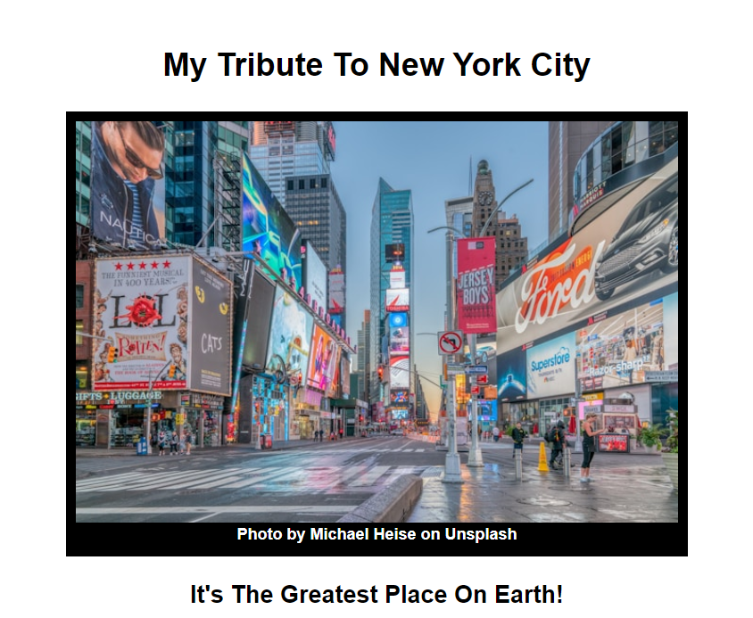

Here are two of my sample projects!

A nonprofit communications and marketing manager in the New York Tri-State area. Recently, I embarked on an exciting journey to learn web development, and I am thrilled to share my progress with you.
I've have spent the past 12 weeks learning HTML & CSS through Project Code and freeCodeCamp, completing 10 courses covering some of the following topics:
In addition to these courses, I have completed two class projects, which I am proud to include in this class portfolio.
Learning something new and complex has been both challenging and rewarding. I am eager to build upon these skills and gain more confidence in web development.
All projects created through freeCodeCamp.